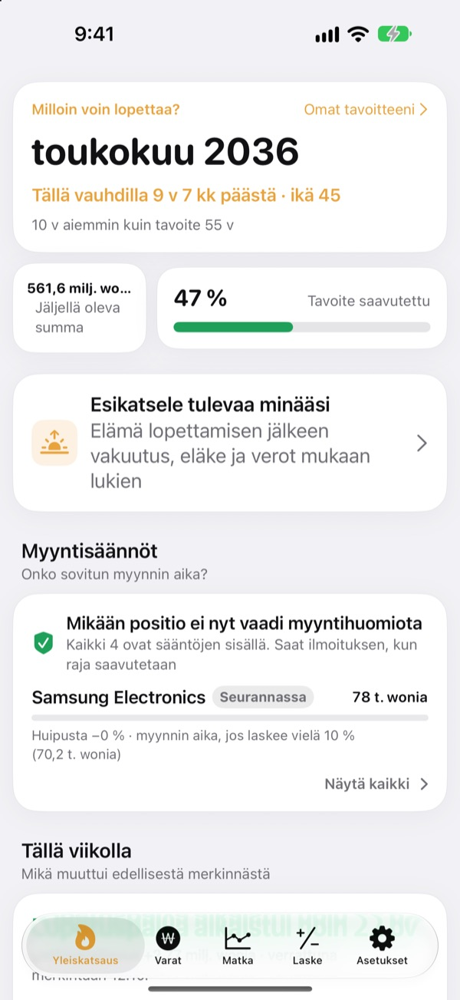
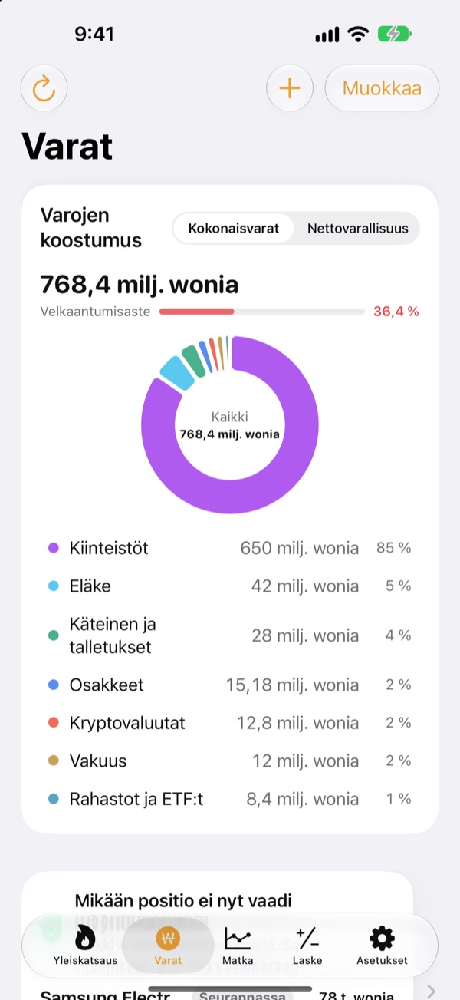
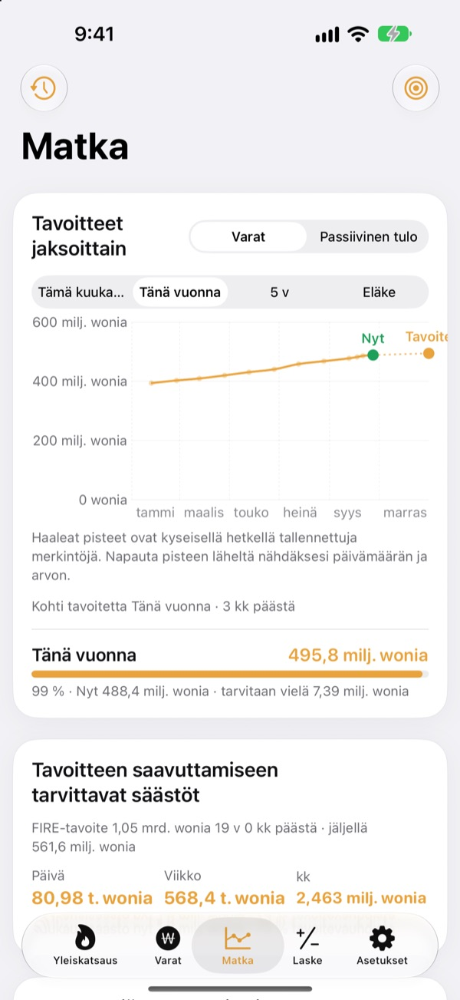
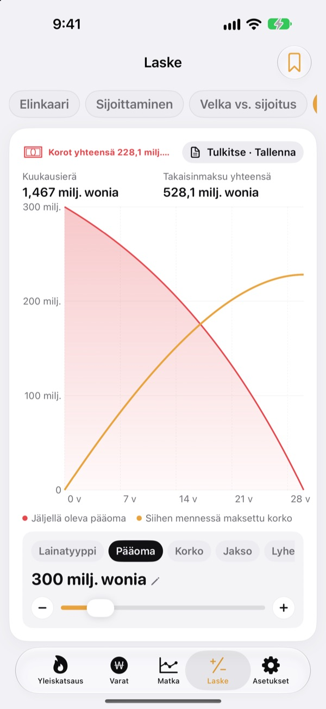

Milloin voit lopettaa?
Luvuilla, ei fiiliksellä.
Syötä menosi ja säästösi, niin näet kuukauden, jolloin voisit jättää työt. Aina kun varasi muuttuvat, näet, siirtyikö päivä lähemmäs vai kauemmas.
Tiliä ei tarvita. Merkintäsi pysyvät laitteellasi.

Laske lopetuspäiväsi
Liikuta liukusäätimiä. Laskenta on sama kuin sovelluksen ensimmäisessä näkymässä.
Lasketko yhä päässäsi, voisitko jo lopettaa?
Kun pankkitili, arvo-osuustili, eläkesäästöt ja vuokravakuus ovat kaikki eri paikoissa, edes kokonaissumma ei pysy selvänä, ja lopetuspäivä jää arvaukseksi. Toesagak kokoaa kaiken yhteen näkymään ja laskee siitä jatkuvasti uudelleen kuukauden, jolloin voisit lopettaa.
Kaikki varat yhdessä näkymässä
Kiinteistöt, osakkeet, rahastot ja ETF:t, eläkkeet, käteinen ja talletukset, vuokravakuudet, kryptot ja lainat tyypeittäin, kokonaisvarojen, nettovarallisuuden ja velkaantumisasteen kera.
Osakkeiden ja kryptojen hinnat haetaan, jotta arvot pysyvät ajan tasalla, ja kuvakaappaus välittäjäsi sovelluksesta tuo omistukset ja arvot kerralla.

Paljonko päivässä riittää
Tämä kuukausi, tämä vuosi, viisi vuotta ja eläke tavoitteina sekä aiemmat merkinnät samassa kaaviossa. Näet myös, paljonko sinun pitää säästää päivässä, viikossa tai kuukaudessa pysyäksesi aikataulussa.
Kun varasi muuttuvat, viikon merkintä tallentuu automaattisesti, joten historia kertyy itsestään.

Laske ennen isoja päätöksiä
Laskurit: varallisuus elämänkaaren yli, sijoittaminen, lyhennys vai sijoitus, lainat, säästöt ja talletukset, palkan ostovoima sekä raha tunteina. Vedä arvoa, niin kaavio piirtyy uudelleen ja edellinen käyrä jää katkoviivaksi vertailua varten.
Nimeä ja tallenna asetelmat, joihin palaat.

Aloita kolmessa vaiheessa
- 1
Syötä menosi ja ikäsi
Karkeat luvut riittävät. Lopetuspäivä näkyy heti.
- 2
Lisää varasi
Mitä tarkemmin erittelet, sitä tarkempi päivä.
- 3
Kurkkaa silloin tällöin
Viikoittaiset merkinnät kertyvät itsestään, ja sovellus voi muistuttaa kuun 1. päivänä.
Näin sovellus laskee
- Tavoite
- Vuoden menot lopettamisen jälkeen ÷ turvallinen nostoaste (4 %:lla se on 25 vuoden menot)
- Lopetuspäivä
- Kuukausi, jolloin nettovarallisuutesi ja kuukausisäästösi odotetulla tuotolla kasvatettuina saavuttavat tavoitteen
- Kokonaisvarat
- Kaikki omistamasi yhteenlaskettuna
- Nettovarallisuus
- Kokonaisvarat miinus velat, kuten lainat
- Eteneminen
- Nettovarallisuus ÷ tavoite. Voit seurata sitä myös passiivisen tulon kautta
- Mitä voit muuttaa
- Kuukausimenot, nostoaste 2–6 %, odotettu tuotto 0–12 %, ikä, jolloin haluaisit lopettaa
Kaikki tulokset ovat syöttämiisi tietoihin perustuvia suuntaa-antavia laskelmia eivätkä ole sijoitusneuvontaa.
Kysymyksiä
Mihin merkintäni tallennetaan?
Vain laitteellesi. Rekisteröitymistä ei ole, eikä mitään lähetetä kehittäjälle. Kun otat iCloud-synkronoinnin käyttöön asetuksista, näet samat merkinnät iPhonessa ja iPadissa oman iCloud-tilisi kautta.
Hinnat eivät päivity.
Yhdysvaltain ja Korean osakkeet, kryptot ja valuuttakurssit toimivat ilman asetuksia. Tarkista nettiyhteys ja että tunnus tai koodi on oikein. Asuntojen hinnat tulevat Korean julkisesta kiinteistödatasta, ja niitä varten asetuksiin syötetään maksuton palveluavain.
Mitä eroa on kokonaisvaroilla ja nettovarallisuudella?
Kokonaisvarat ovat kaikki omistamasi yhteenlaskettuna. Nettovarallisuus on sama summa miinus velat, kuten lainat. Lopetuspäivä lasketaan nettovarallisuudesta.
Miten siirrän merkinnät uuteen laitteeseen?
Tee asetuksissa varmuuskopiotiedosto Vie-toiminnolla, säilytä se Tiedostoissa, iCloud Drivessa tai sähköpostissa ja palauta se uudessa laitteessa. Varmuuskopiot eivät koskaan sisällä API-avaimia. Sovellus säilyttää myös 20 viimeisintä varmuuskopiota laitteella automaattisesti.
Miten myyntihälytykset toimivat?
Aseta kullekin omistukselle, kuinka paljon se saa pudota huipustaan, tai tavoitehinta. Kun raja ylittyy, saat ilmoituksen. Nousun aikana sovellus pysyy hiljaa. Hinnat tarkistetaan, kun avaat sovelluksen ja kun iOS sallii sen taustalla (yleensä muutaman tunnin välein), joten kyse ei ole reaaliaikaisesta seurannasta.
Voinko pitää lukuni omana tietonani?
Ota asetuksista käyttöön Apin lukitus, niin sovellus avautuu Face ID:llä tai pääsykoodilla. Kun lukitus on päällä, kuukausimuistutuksessakaan ei näy lukuja.
Voinko ensin vain katsella?
Ota asetuksista käyttöön Demotiedot ja tutki kaikkia näkymiä kuvitteellisen henkilön varoilla. Kun kytket ne pois, omat merkintäsi palaavat heti. Demotiedot eivät ole käytettävissä, kun iCloud-synkronointi on päällä.
Miten poistan kaikki tietoni?
Sovelluksen poistaminen poistaa kaikki laitteelle tallennetut merkinnät. Jos haluat säilyttää kopion, vie ensin varmuuskopiotiedosto asetuksista.
Voinko sijoittaa näiden lukujen perusteella?
Toesagakin tulokset ovat syöttämiisi tietoihin ja oletettuun tuottoon perustuvia suuntaa-antavia laskelmia. Ne eivät ole sijoitusneuvontaa, ja todelliset tulokset riippuvat markkinoista ja omasta tilanteestasi.
Virheitä, ideoita tai kysyttävää? Kirjoita osoitteeseen leeo@kakao.com.